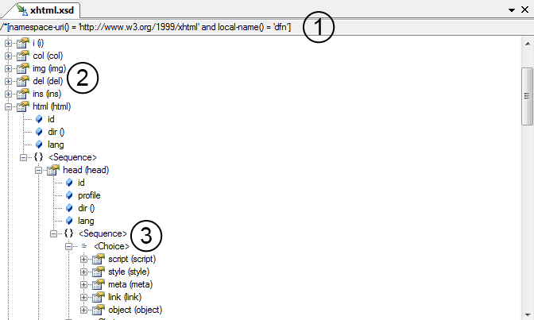
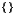

The schema viewer allows developers to view schemas in a graphical manner. The schema viewer is illustrated below:
The icons used in the schema viewer (and in the differencing tool) are similar to Visual Studio object viewer icons. They are:
|  | xs:sequence | Represents a sequence of elements in a specific order |
| xs:choice | Represents a choice (ie:choose one of) elements | |
| xs:any (or mixed content) | Identifies that the contents of the element may be anything | |
| xs:element | Represents an element (ie: <property/>) | |
| xs:attribute | Represents a an attribute (ie: <property attribute="value"/>) |
| Copyright (C) 2010, Mohawk College of Applied Arts and Technology |